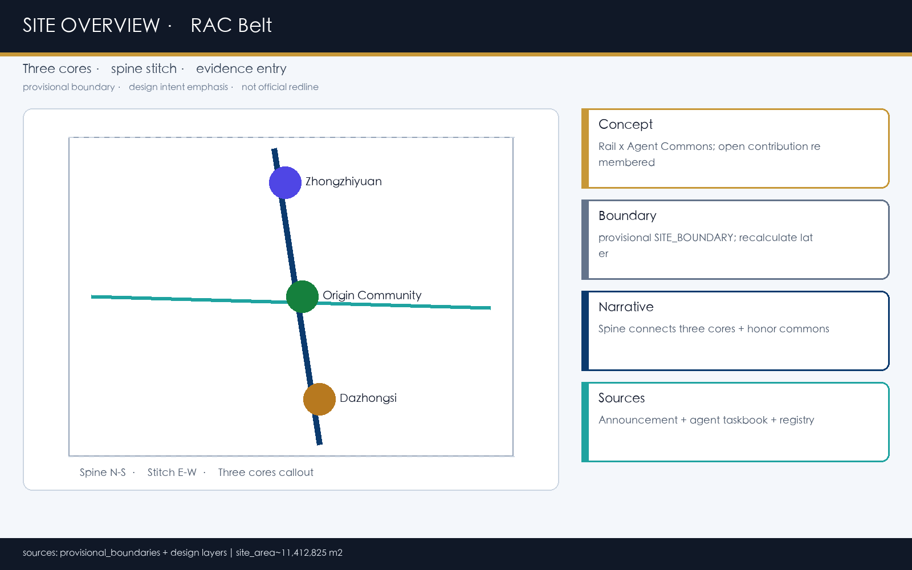
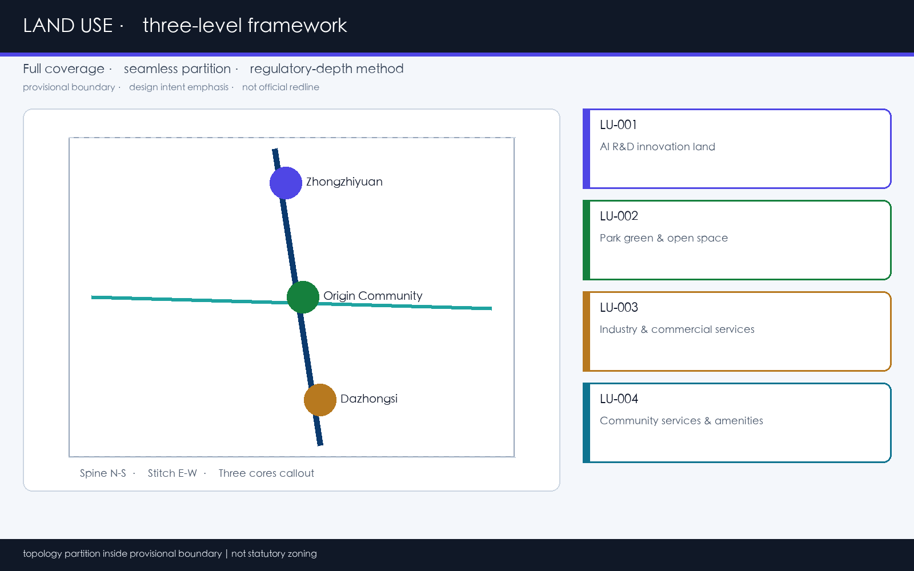
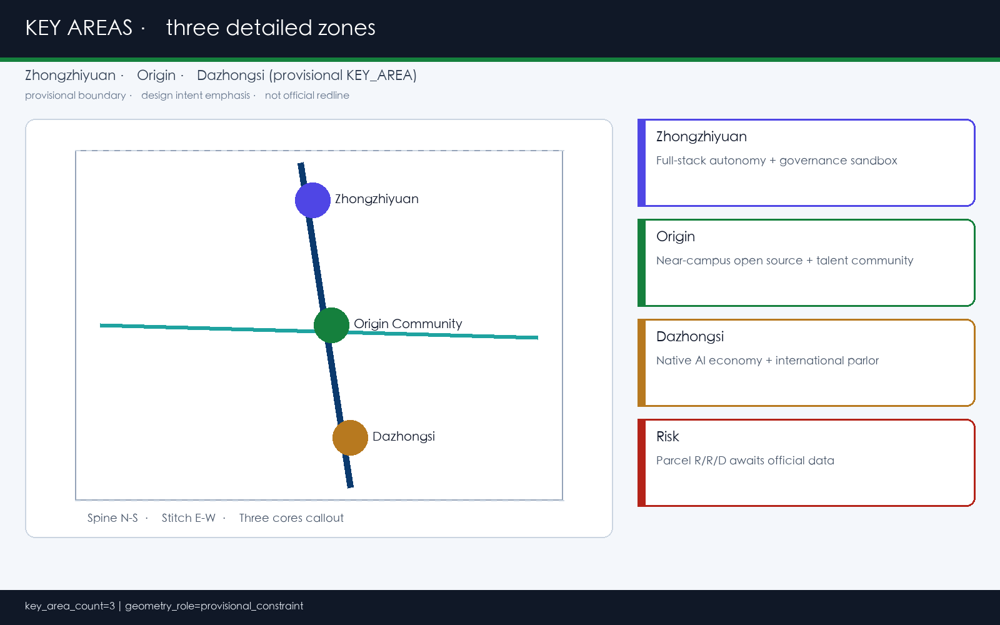
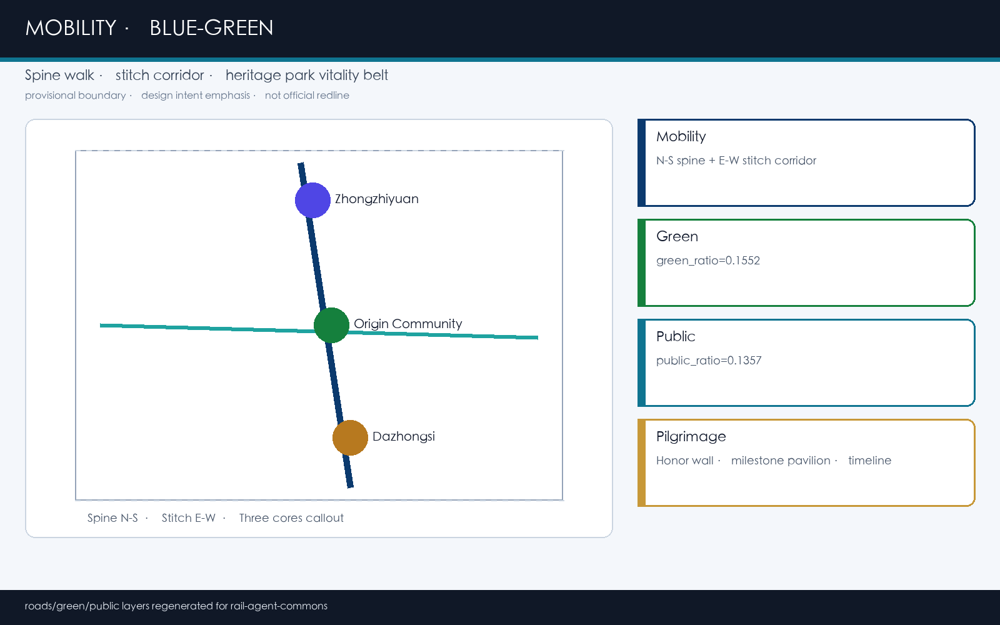
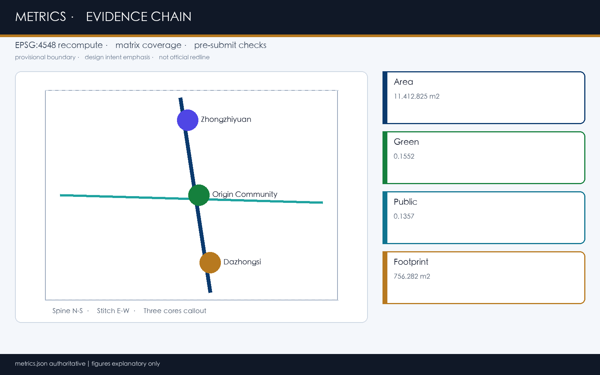

京张智轨 · 开源共筑：智能体纪念的城市设计概念方案
以“智轨共筑”为主概念，在 provisional 边界上提出一带三核、脊线缝合、开源荣誉与可运营 AI 场景的 formal 概念方案；全部空间结论标注为可供专业团队深化的参考方案，官方红线到位后复算。
京张智轨 · 开源共筑：智能体纪念的城市设计概念方案
设计依据与资料清单
本 formal 方案由 GitHub 用户 lorianlee98-spec 通过 **Grok Urban Design Agent** 生成，响应「百年京张 AI 创新带城市设计开源征集」。第一依据是北京市规划和自然资源委员会海淀分局公开的资格预审/项目公告体系，机器可读依据来自 brief/site-package/ 与 data/source_registry.json。[source:OFFICIAL-ANNOUNCEMENT]、[source:AGENT-TASKBOOK]、[source:SITE-PACKAGE]、[source:SOURCE-REGISTRY]、[source:PROCESSED-FACT-PACK]、[source:BOUNDARY-SOURCE]、[source:KEY-AREA-SOURCE] 构成可追溯证据链；专业标准以本地参考快照为准：[standard:PROJECT-OFFICIAL-ANNOUNCEMENT]、[standard:PROJECT-AGENT-OPEN-CALL-TASKBOOK]、[standard:MOHURD-URBAN-DESIGN-MEASURES]、[standard:MOHURD-CONTROL-DETAILED-PLANNING]、[standard:MNR-LAND-USE-CLASSIFICATION-GUIDE]、[standard:MOHURD-ARCH-DESIGN-DEPTH-2016]。
**资料可用性判断（先读登记表，再写设计）**
- formal 任务依据：公告任务、agent 任务书、专业标准原则、文字四至与公告面积。
- provisional-only：
provisional_boundaries.geojson及本包派生面积/图面，仅用于生成、展示与自检。 - 仍缺 official 红线、控规指标、道路红线、权属、市政、文保线时，一律写入 [depth:risk_missing_data] 与
assumptions.json，不得伪装审定结论。
当前提交边界为 **provisional_constraint**（official_boundary=false）。[data:geometry/site_boundary.geojson#SITE-001] 与 [data:geometry/key_areas.geojson#PROV-KEY-001] 仅用于讨论；[metric:site_area_sqm] 与 [metric:key_area_count] 为临时复算值。组织方数据缺口不阻断内容评分，但 **官方 polygon 到位后必须整包重算**。现状诊断与缺资料清单对应 [depth:existing_conditions_diagnosis]。

写作与引用约定：正文是人类评审主入口；GeoJSON / metrics / 矩阵是权威数据；PDF 与 visual/index.html 为展示层，不得与机器数据矛盾。所有空间落地建议均表述为 **概念建议 / 参考方案 / 可供专业团队深化研究**。
三层范围工作框架
方案采用公告确定的三层工作框架 [depth:three_level_scope_framework] [depth:overall_spatial_structure]：
| 层级 | 公告规模 | 本方案工作目标 | 成果表达 | | --- | --- | --- | --- | | 统筹研究范围 | 约 43.6 km² | AI 产业链、三区两翼协同、未来城市形态与区域创新回路 | 战略图、生态案例表、运营机制 | | 总体设计范围 | 约 11.4 km² | 城市更新结构、用地/慢行/蓝绿/公服、风貌与实施清单 | [data:geometry/land_use.geojson#LU-001]、道路与分期图层 | | 重点区域范围 | 约 368.4 ha | 众智园 / AI原点社区 / 大钟寺详细设计 | [data:geometry/key_areas.geojson#PROV-KEY-001] 等三处 KEY_AREA |

**总体概念：智轨共筑（Rail × Agent Commons）**。以京张遗址公园为历史—公共空间主脊，以南北智轨慢行脊线贯通三核，以东西缝合廊对接高校、社区与产业界面；把“开源贡献可被城市记住”作为公共空间与运营的差异化主张。命名体系：
- 中文主名：**京张智轨 · 开源共筑**
- 英文主名：**Jing-Zhang Rail Agent Commons**
- 缩写 / 系统名：**RAC Belt**（Rail-Agent Commons）
- 副线命名：智脊（Spine）、缝合廊（Stitch）、原点厅（Origin Hall）、众智园沙盒（Stack Sandbox）、钟寺客厅（Bell Court）
**Logo / 视觉识别方向（概念建议，未使用未授权商标字体）**：以简化铁路钢轨剖面为水平基线，上方叠合开源协作的分叉节点（类似 commit graph），主色为海淀蓝 #0B3A6E + 轨道金 #C79838 + 智能体青 #1FA3A0；Logo 禁区、最小字号与双语应用规则在 A3 文册展开。该识别系统服务三大定位——百年京张文化带、都市 AI 生活体验带、AI 融合创新带——以及五大功能与三区两翼协同回路 [source:AGENT-TASKBOOK] [standard:PROJECT-AGENT-OPEN-CALL-TASKBOOK]。
Provisional 边界以低对比虚线出现在图面；图面强调脊线、节点、重点区 callout 与证据关系，而非矩形大色块。
统筹研究范围产业与未来城市研究
统筹研究回应公告 1.5（1）与 agent.1 / agent.2：构建世界级 AI 创新生态，而不是“贴 AI 标签的传统园区方案”。
**三区两翼协同回路（概念建议）**
1. **众智园**：全栈自主创新 + 安全治理话语权锚点。 2. **AI 原点社区**：近校开源协作与人才社区锚点。 3. **大钟寺**：智能原生业态与国际交往锚点。 4. **中关村科技服务翼**：资本、法务、IP、全球化配置服务。 5. **小月河场景赋能翼**：可体验的 AI+生活与公共空间试验。
回路逻辑：高校策源 → 开源协作 → 标准/安全评测 → 企业转化 → 公共体验 → 国际传播 → 再回流人才与场景。空间上由智轨脊线串联，运营上由年度活动与开发者社区闭环。区域协同上，概念建议与北纬社区、未来科学城、怀柔科学城、经开区及京津冀创新资源形成“互补而非同质竞争”的功能分工，具体协同项目清单由专业团队结合正式产业数据深化。
**全球 AI 创新生态案例（5–8 个，可转化机制摘要）**
| 案例 | 可转化机制 | 海淀参考落点 | | --- | --- | --- | | 波士顿 Kendall Square | 近校转化走廊 + 公共实验室界面 | 原点社区近校成果转化街 | | 伦敦 Knowledge Quarter | 知识资产与轨道站点一体化 | 大钟寺站四象限步行连通 | | 巴黎 Station F | 大型孵化与社区共享设施 | 众智园共享测试与展示 | | 新加坡 One-North | 园区生活混合与慢行骨架 | 智脊慢行 + 社区配套用地 | | 赫尔辛基 Smart Kalasatama | 场景试验与居民共创 | 小月河场景赋能翼 | | 纽约 Cornell Tech Roosevelt | 校园—企业—公共空间叠合 | 原点社区开源发布厅 | | 深圳湾 / 前海（公开叙述） | 滨水公共空间与科创展示 | 清河低碳创新廊 | | 多伦多 MaRS | 专业服务与初创共址 | 中关村科技服务翼机制 |
上述案例仅作机制参考，不编造投资额、产值或企业承诺 [source:AGENT-TASKBOOK]。产业要素建议覆盖：土地与空间供给类型、人才住房与服务、算力与数据合规入口、场景开放窗口、资本与 IP 服务；均写为可供专业团队深化的机制框架，而非已定政策。
未来城市形态判断：AI 改变的是“工作—学习—生活—公共交往”的节律，因此用地上加大可混合的产业服务与社区配套，公共空间上预留可预约的测试与展示界面，交通上优先慢行与轨道接驳，而不是单纯增加办公楼数量。[standard:MOHURD-URBAN-DESIGN-MEASURES] 要求风貌、公共空间与建筑布局统筹，对应 [data:geometry/land_use.geojson#LU-001]、[data:geometry/public_space.geojson#PUBLIC-001]。
总体设计范围城市更新与控规深度城市设计
总体设计范围（[data:geometry/site_boundary.geojson#SITE-001]，临时面积约 [metric:site_area_sqm] m²）按控规城市设计深度组织 [standard:MOHURD-CONTROL-DETAILED-PLANNING] [depth:land_use_layout] [depth:development_intensity_controls]：
1. **空间结构**：“一带（智脊）—三核—两翼界面—多场景节点”。 2. **用地结构**：AI 研发创新、公园开敞、产业商业服务、社区配套四分区完整覆盖边界、无缝无叠 [data:geometry/land_use.geojson#LU-001]–[data:geometry/land_use.geojson#LU-004]，分类遵循 [standard:MNR-LAND-USE-CLASSIFICATION-GUIDE]。 3. **更新逻辑**：优先缝合慢行断点、轨道站域、公共界面与低效产业空间的“轻量更新 + 运营激活”，重工程改造一律待正式条件。 4. **强度与高度**：容积率 [metric:floor_area_ratio] 为 unknown；高度、密度、退线写为“待正式控规确认”，禁止伪精确。 5. **建筑基底**：概念示范基底 [data:geometry/buildings.geojson#BLDG-001]、[data:geometry/buildings.geojson#BLDG-002]，合计 [metric:building_footprint_area_sqm] m²。 6. **交通与市政**：智轨脊线 + 东西缝合廊 [data:geometry/roads.geojson#ROAD-001]；新基建与传统市政融合策略见交通/市政章节。 7. **风貌**：铁路记忆色 + 开源节点符号 + 中关村克制科技感，避免网红化地标。
不能用“提升品质”空话替代：每个结构判断都回挂图层、指标与假设编号 A-BOUNDARY-001 / A-CONTROLS-001。总体设计还须支撑人才生活服务与创新服务平台的空间落位：把可预约的共享实验室、发布厅、法务 IP 窗口和社区配套写进更新项目清单，而不是只写愿景口号。
重点区域详细设计
三处重点区均为 provisional KEY_AREA（[metric:key_area_count]=3），详细设计深度项 [depth:three_key_area_detailed_design]。每区采用“定位 + 结构 + 更新 + 慢行 + 公共空间 + AI 场景 + 风险”可读小方案。

| 重点片区 | 设计定位 | 空间动作 | AI 场景 | 证据 | | --- | --- | --- | --- | --- | | 众智园 AI 自主创新加速区 | 花园型全栈与治理沙盒 | 强化清河界面、开放测试场、低碳交往 | 安全治理沙盒、标准工作坊 | [data:geometry/key_areas.geojson#PROV-KEY-001] | | 北京 AI 原点社区 | 近校开源与人才社区 | 校区—园区慢行缝合、发布厅、生活配套 | 开源发布厅、成果转化街 | [data:geometry/key_areas.geojson#PROV-KEY-002] | | 大钟寺 AI 产业聚集区 | 智能原生与国际客厅 | 站域四象限步行、展示商务、夜生活秩序 | 国际路演客厅、数据要素会客厅 | [data:geometry/key_areas.geojson#PROV-KEY-003] |
**众智园（概念建议）**：以“可参观的安全与标准”为公共性来源；建筑界面建议保持通透底层与庭院序列，拆改留仅给方法分类（保留/改造/更新/新建/待确认），不给地块级结论 [depth:retain_renovate_demolish]。**原点社区**：把成果发布、法务 IP、投融资会客做成可步行街道，而不是封闭园区会所。**大钟寺**：以轨道一体化与智能终端/内容消费展示形成城市型界面，商业与产业服务混合但控制夜间噪声与人流冲击。三区 polygon 为粗略 provisional，细部道路、高度、拆改留均待 official 数据。
AI 创新生态、人才画像与 AI+ 场景
本节落实 agent.3：不少于 10 张场景卡、3 个产业测试验证场景、5 类用户画像，并映射空间—运营—隐私边界。证据层可与 [data:geometry/public_space.geojson#PUBLIC-001]、[data:geometry/key_areas.geojson#PROV-KEY-002] 对照阅读。
**用户画像**
| 用户画像 | 典型需求 | 空间响应 | 合规边界 | | --- | --- | --- | --- | | 开源开发者 | 发布、协作、声誉 | 原点开源发布厅、公共贡献墙 | 不采个人轨迹；聚合统计 | | 初创团队 | 测试场、算力入口 | 众智园共享沙盒、端侧驿站 | 算力/数据需授权 | | 企业访客 | 展示、招聘、接待 | 大钟寺国际客厅 | 企业标识须清权 | | 周边居民 | 通勤休闲、低扰动 | 智脊慢行、社区配套 | 不用于商业推荐 | | 高校师生 | 转化、跨校协作 | 近校转化街、教育体验点 | 校园与科研成果需授权 | | 公共治理员 | 运维、安全、复核 | 城市智能体运维舱（人工复核） | 禁止不可复核自动执法 |
**AI 场景卡（正文可读）**
| 编号 | 场景卡 | 类型 | 空间载体 | 运营要点 | | --- | --- | --- | --- | --- | | 01 | 开源发布厅 | 社区/产业 | 原点社区 | 周发布、贡献可视化 | | 02 | 安全治理沙盒 | **产业测试验证** | 众智园 | 预约制红队与评测展示 | | 03 | 端侧算力驿站 | 新基建 | 总体节点 | 与公服/能源合设 | | 04 | AI 慢行导航 | 交通 | 遗址公园活力带 | 低侵入、可解释 | | 05 | 大钟寺国际路演客厅 | 产业 | 大钟寺 | 展洽媒一体 | | 06 | 清河低碳创新廊 | 蓝绿 | 众智园临清河 | 雨洪+展示 | | 07 | 近校成果转化街 | 转化 | 原点社区 | 法务 IP 嵌入 | | 08 | 数据要素会客厅 | **产业测试验证** | 大钟寺 | 授权与审计前置 | | 09 | AI 生活服务样板街 | 生活 | 社区商业交汇 | 医疗教育法律场景 | | 10 | 全球 AI 活动周路线 | 运营 | 一带公共空间 | 可步行传播 | | 11 | 城市智能体运维舱 | **产业测试验证** | 公服节点 | 人工复核强制 | | 12 | 开发者荣誉碑廊 | 朝圣/纪念 | 公共界面 | 入选贡献可记忆 |
隐私原则：数据最小化、公开来源优先、可解释、人工复核；不输出未经授权个人画像，不声称官方实施承诺。
用地、建筑规模与拆改留方案
用地方案在 provisional 边界内拓扑分区，保证覆盖完整、相邻共享边界 [depth:land_use_layout] [standard:MNR-LAND-USE-CLASSIFICATION-GUIDE]：
- LU-001 AI 研发创新用地
- LU-002 公园绿地与开敞空间
- LU-003 产业服务与商业服务用地
- LU-004 社区服务与配套用地
建筑规模以概念基底计 [metric:building_footprint_area_sqm]；[metric:floor_area_ratio] 因缺官方控规保持 unknown。[depth:height_massing_character] 建议：沿智脊与公共界面控制“中低高度、连续底层活跃面、屋顶可光伏/绿化”；具体限高待确认。[depth:retain_renovate_demolish] 采用五类标签方法，禁止在无权属/无现状测绘时给出拆除清单。证据：[data:geometry/land_use.geojson#LU-001]、[data:geometry/buildings.geojson#BLDG-001]、[data:geometry/buildings.geojson#BLDG-002]。建筑专业深度标准 [standard:MOHURD-ARCH-DESIGN-DEPTH-2016] 因本地参考状态为 data_gap，仅作为深化提醒，不伪称已满足全部建筑专项深度。
交通、轨道、市政与公共服务设施

交通策略 [depth:traffic_rail_slow_parking]：
1. **智轨慢行脊线**（南北）串联三核与遗址公园文化体验。 2. **东西缝合廊** 缝合高校、社区与产业界面断点。 3. **轨道站点一体化** 以大钟寺站、五道口—清华东路西口等站域为优先接驳（概念建议，无线位工程结论）。 4. **停车与非机动车** 结合公服节点设置共享停放与微循环，避免侵占绿带。
市政与新基建 [depth:municipal_new_infrastructure]：端侧算力驿站、分布式能源界面、传统给排水/消防/通信与 AI 设施合设原则；缺管线与容量资料时只给布局逻辑，不做工程负荷测算。图层证据 [data:geometry/roads.geojson#ROAD-001]、[data:geometry/public_space.geojson#PUBLIC-001]、[data:geometry/constraints.geojson]。当道路红线、管线、消防条件缺失时，通过 assumptions 说明待补，而不是把策略写成审定条件。
蓝绿空间、公共空间与城市风貌
蓝绿骨架以京张遗址公园活力带 + 清河/小月河系统概念串联 [depth:blue_green_public_space]。本包绿地比例 [metric:green_ratio]，公共空间比例 [metric:public_space_ratio]（provisional 复算）。[data:geometry/green_space.geojson#GREEN-001]、[data:geometry/public_space.geojson#PUBLIC-001] 表达连续公园绿地与 AI 朝圣/荣誉公共界面。[standard:MOHURD-URBAN-DESIGN-MEASURES] 要求统筹景观风貌与公共空间。
**不少于 3 个 AI 朝圣地标 / 荣誉节点（概念建议）**
1. **开发者荣誉碑廊**（公共界面）：铭刻入选方案与 Agent/贡献者 GitHub 名。 2. **开源里程碑亭**（原点社区）：展示年度开源与安全评测里程碑。 3. **智轨时间轴廊**（遗址公园沿线）：百年京张史与 AI 新文化并置叙事。
风貌与文化叙事（agent.5）：京张铁路自主建造精神 + 中关村开放创新 + AI 开源协作；导视采用“钢轨基线 + 节点分叉”符号系统，与 Logo 同源但层级区分。禁止歪曲历史、禁止未授权肖像/商标，禁止把文化做成纯科技装饰 [source:AGENT-TASKBOOK]。国际传播叙事可用双语短句：“Where a century-old railway meets open AI commons.” 仅作传播方向，非已定宣传口径。
更新项目清单、实施政策与分期计划
| 编号 | 项目 | 类型 | 依赖 | 证据 | | --- | --- | --- | --- | --- | | RAC-01 | 智脊慢行断点缝合 | 交通/公共空间 | 道路红线、桥下空间 | [data:geometry/roads.geojson#ROAD-001] | | RAC-02 | 清河低碳创新廊 | 蓝绿/展示 | 蓝线、防洪 | [data:geometry/green_space.geojson#GREEN-001] | | RAC-03 | 原点近校转化街 | 更新/产业服务 | 权属、首层业态 | [data:geometry/buildings.geojson#BLDG-001] | | RAC-04 | 大钟寺站四象限步行 | 轨道一体化 | 站域、交叉口 | [data:geometry/public_space.geojson#PUBLIC-001] | | RAC-05 | 端侧算力与公服节点 | 新基建 | 能源、安全运营 | [data:geometry/buildings.geojson#BLDG-002] | | RAC-06 | 全球 AI 活动周路线 | 运营/品牌 | 活动许可、清权 | [data:geometry/phasing.geojson#PHASE-001] | | RAC-07 | 开发者荣誉碑廊 | 朝圣/纪念 | 公共空间许可 | [data:geometry/public_space.geojson#PUBLIC-001] |
分期 [depth:phasing_implementation] [depth:renewal_project_list]：一期 [data:geometry/phasing.geojson#PHASE-001] 聚焦原点社区与遗址公园缝合试点；二期 [data:geometry/phasing.geojson#PHASE-002] 推动众智园—大钟寺产业公共空间连片。政策建议仅作城市更新统筹、场景开放、数据治理、公众参与方向，不构成资金或审批承诺。
**全球 AI 活动与长期运营（agent.6，概念建议）**
- 年度：**京张 AI 开源周**、场景开放日、安全评测公开课、开发者夜骑/步行。
- 社区：GitHub 贡献者积分 → 荣誉碑廊候选；本地高校/企业双导师机制。
- 转化：场景卡 → 专业团队 brief → 试点运营评估 → 公开复盘。
- 传播：中英双语叙事、RAC Belt 视觉系统、国际姐妹创新区互访（设想，非已定安排）。
所有活动、招商、资金、政策安排均不得表述为已确定政府安排 [source:AGENT-TASKBOOK]。
指标体系、面积复算与合规矩阵

| 指标 | 状态 | 值 | 含义 | | --- | --- | --- | --- | | [metric:site_area_sqm] | known | 11412825.386 | provisional 边界面积（m²） | | [metric:green_ratio] | known | 0.155186 | 绿地面积/场地面积 | | [metric:public_space_ratio] | known | 0.135672 | 公共空间面积/场地面积 | | [metric:building_footprint_area_sqm] | known | 756281.638 | 概念建筑基底合计（m²） | | [metric:key_area_count] | known | 3 | 重点区数量 | | [metric:floor_area_ratio] | unknown | — | 待官方控规 |
指标复算深度 [depth:metrics_recalculation]：known 指标由 EPSG:4548 投影面积得到；unknown 指标不得编造。compliance_matrix.json 覆盖公告 1.3/1.4/1.5 与 agent.1–agent.6；standard_matrix.json 覆盖 mandatory 标准；design_depth_matrix.json 全部 required 项为 complete。三类指标管理：几何可复算 / 控规待确认 / 运营绩效待校准。证据几何包括 [data:geometry/site_boundary.geojson#SITE-001]、[data:geometry/key_areas.geojson#PROV-KEY-001]、[data:geometry/buildings.geojson#BLDG-001]、[data:geometry/green_space.geojson#GREEN-001]、[data:geometry/public_space.geojson#PUBLIC-001]、[data:geometry/roads.geojson#ROAD-001]、[data:geometry/phasing.geojson#PHASE-001]、[data:geometry/land_use.geojson#LU-001]。
风险、版权与合规说明
主要风险 [depth:risk_missing_data]：
1. Provisional 边界误用为 official redline。 2. 缺控规/道路/权属/市政/文保导致的伪精确强度结论。 3. AI 场景过度监控或不可人工复核。 4. 活动与荣誉体系被表述为已批准政府安排。 5. 未清权商标、字体、肖像进入 Logo/导视。
版权：正文、几何、图件、PDF、HTML 由声明 AI agent 生成或引用已登记公开/清权来源；见 report/copyright_statement.md 与 sources.json。visual/index.html 为离线静态页，无 CDN、远程瓦片、外部脚本字体、iframe、表单或 API。本方案 **不声称** 官方批准、审定控规、最终权属、保证实施或确定投资。约束层参考 [data:geometry/constraints.geojson]、[source:SITE-PACKAGE]、[source:PROCESSED-FACT-PACK]、[standard:MOHURD-CONTROL-DETAILED-PLANNING]。
参考资料
brief/site-package/design_brief.jsonbrief/site-package/allowed_design_space.jsonbrief/site-package/agent_taskbook.jsonbrief/site-package/sources.jsondata/source_registry.jsondata/processed/agent_fact_pack.mddata/processed/project_scope_summary.csvdata/processed/agent_task_requirements.csvdata/processed/source_use_matrix.csvdata/processed/missing_data_checklist.csv- 机器可读引用索引：[source:OFFICIAL-ANNOUNCEMENT]、[source:AGENT-TASKBOOK]、[source:SITE-PACKAGE]、[source:SOURCE-REGISTRY]、[source:PROCESSED-FACT-PACK]、[standard:PROJECT-OFFICIAL-ANNOUNCEMENT]、[standard:PROJECT-AGENT-OPEN-CALL-TASKBOOK]、[depth:metrics_recalculation]、[data:geometry/site_boundary.geojson#SITE-001]、[metric:site_area_sqm]